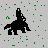
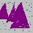
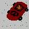
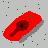
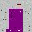
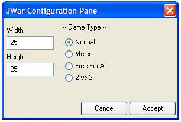
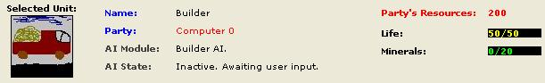
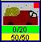

|  | Critter. It's a peacefull and a neutral unit that only roams the realms of JWar. But don't be fooled by it's innocence! It's a nightmare! Each and one of these "beasts" will block your units movement. That's why the "Killer" vehicle will kill them on sight, just to clear the way for your "Builders". |
|  | The standard resource. You will need to mine these to collect minerals for your units. "Builders" have the option toautomatically find and mine these crystals. |
|  | The standard "Builder" vehicle. You can use them to mine resources for you needs and also build the "Main Building".
These units have lots of hit points but are also dumb as cows are. You
will have to be careful to not let them in the hands of the enemy "Killers" which will most surely try to destroy them at sight. Following commands are available for control: 1. "Stop" - will tell this unit to stop whatever it was doing. 2. "Mine Nearest Resources" - will engage the resource collection mode. "Builders" will serach for minerals, mine them and bring them home for unloading. This will repeat until stop command will be issued. 3. "Build Main Building" - Will make this unit build a main building. |
|  | The "Killer" tank vehicles. These are the standard attack machines of the game. Following commands are available for control: 1. "Stop" - will tell this unit to stop whatever it was doing. 2. "Patrol" - engage "Patrol Near Home" mode which will make the "Killer" patrol near the home base at a predefined distance. A good mode when you're in a war and don't want to loose the main building. 3."Protect" - engage "Protect Builders" mode. A unit having this mode will run to the farest Builder it can reach, then ... to the farest from that one, in continous loop. 4. "Destroy" - Temporary mode that will tell "Killer" to find the nearest dangerous threat and destroy it. Note that after destroying it's target, it will not search for a new one. In the modes 2 and 3, if "Killer" will detect a near threat, it will suspend the mode it was in and try to destroy that target. After reaching it's goal, it will resume it's previous mode. Also note that if no mode is specified, "Killer" will look around and if it finds a threat at a small distance it will automatically engage mode 4. |
|  | The "Main Building".
Don't be fooled by the word "Main" in it's title, actually you can
build as many as you like. Actually, building more will give you and
advantage over your enemies. You can build more units in the same time
and you can also place those buildings near separate resource fileds
making resource collection faster as "Builders" will select the nearest "Main Building" when returning with the minerals. Following commands are available for control: 1. "Assemble Builder" 2. "Assemble Killer" Both are pretty clear and no description required. |
|  |
| This is the Option dialog box. You will use it to configure game's parameters.Here you can select the Width and the Height of the game fields along with the game type as described earlier. |
|  |
| The state bar. Will display information about the currently
selected unit and a set of buttons corresponding to the possibilities
that this unit has. This bar appears at the bottom of the main windiw. |
|  |
| A selected unit. You can see the difference between a
selected and a non-selected unit. The selected has a set of information
bars at it's bottom. For example Life and Carry Capacity are the once that you can observe at the "Builder". Also note that each unit in game also has a coloured rectangle at it's top right corner. That color indicates the Owner of this unit. |